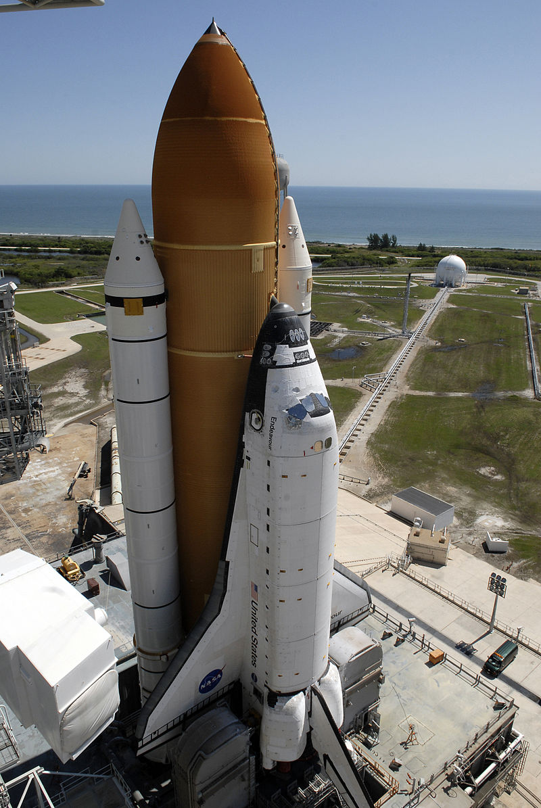

Space Shuttle Endeavour (Orbiter Vehicle Designation: OV-105) is a
retired orbiter from NASA's Space Shuttle program and the fifth and
final operational Shuttle built. It embarked on its first mission,
STS-49, in May 1992 and its 25th and final mission, STS-134, in May
2011.[1][2][3] STS-134 was expected to be the final mission of the
Space Shuttle program,[4] but with the authorization of STS-135,
Atlantis became the last shuttle to fly.
The United States Congress approved the construction of Endeavour in
1987 to replace Challenger, which was destroyed in 1986.
Structural spares built during the construction of Discovery and
Atlantis were used in its assembly. NASA chose, on cost grounds,
to build Endeavour from spares rather than refitting Enterprise or
accepting a Rockwell International proposal to build two Shuttles
for the price of one.